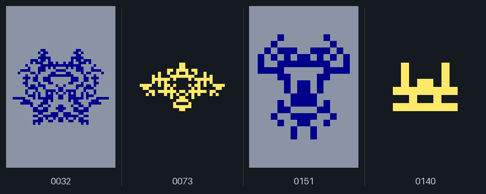
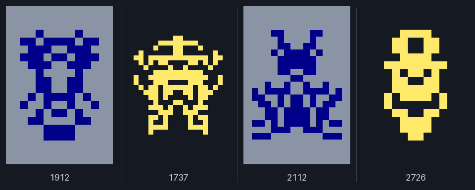
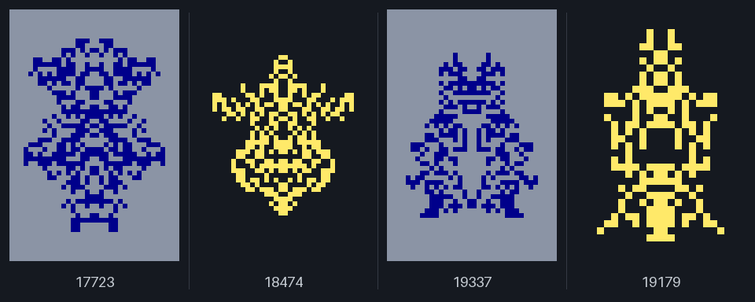

Атлас
Четыре фигуры с центральной оси Маятника для каждого размера поля. Под листом можно скачать отдельные PNG в исходном размере.
Тотемы из атласа 128
Связные фигуры одного цвета касаются центрального столбца поля.



Тотемы из атласа 256
Связные фигуры одного цвета касаются центрального столбца поля.


Тотемы из атласа 512
Четыре фигуры из ранних кадров GIF пересекают границы прежних вырезок.


Тотемы из атласа 1024
Связные фигуры одного цвета касаются центрального столбца поля.



Тотемы из атласа 2048
Связные фигуры одного цвета касаются центрального столбца поля.


Тотемы из атласа 4096
Связные фигуры одного цвета касаются центрального столбца поля.
